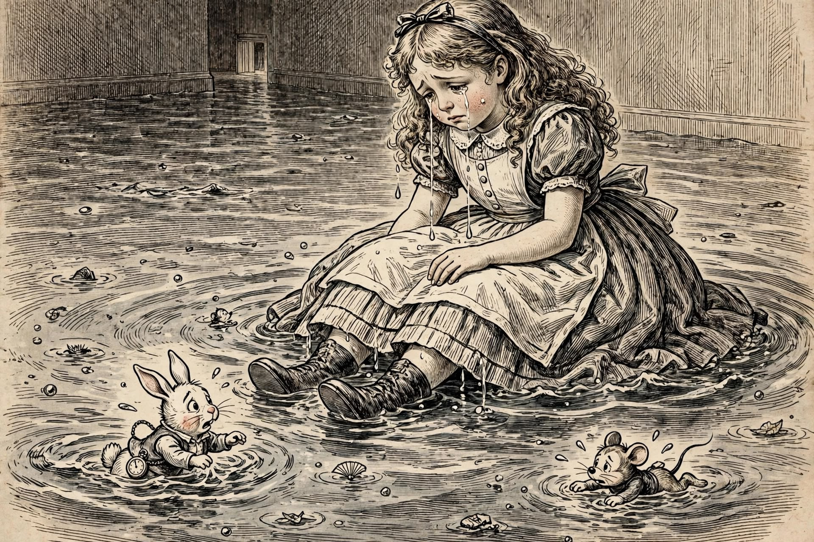

Chapter 2: The Pool of Tears

'Curiouser and curiouser!' cried Alice (she was so much surprised, that for the moment she quite forgot how to speak good English); 'now I'm opening out like the largest telescope that ever was! Good-bye, feet!'
Just then her head struck against the roof of the hall: in fact she was now more than nine feet high, and she at once took up the little golden key and hurried off to the garden door.
Poor Alice! It was as much as she could do, lying down on one side, to look through into the garden with one eye; but to get through was more hopeless than ever: she sat down and began to cry again.
'You ought to be ashamed of yourself,' said Alice, 'a great girl like you, to go on crying in this way! Stop this moment, I tell you!' But she went on all the same, shedding gallons of tears, until there was a large pool all round her, about four inches deep and reaching half down the hall.
After a time she heard a little pattering of feet in the distance, and she hastily dried her eyes to see what was coming. It was the White Rabbit returning, splendidly dressed, with a pair of white kid gloves in one hand and a large fan in the other: he came trotting along in a great hurry, muttering to himself as he came, 'Oh! the Duchess, the Duchess! Oh! won't she be savage if I've kept her waiting!'
Alice felt so desperate that she was ready to ask help of any one; so, when the Rabbit came near her, she began, in a low, timid voice, 'If you please, sir-' The Rabbit started violently, dropped the white kid gloves and the fan, and skurried away into the darkness as hard as he could go.
Alice took up the fan and gloves, and, as the hall was very hot, she kept fanning herself all the time she went on talking: 'Dear, dear! How queer everything is to-day! And yesterday things went on just as usual. I wonder if I've been changed in the night? Let me think: was I the same when I got up this morning?'
She began to feel very sleepy, and soon she was floating in a pool of her own tears. She swam and met a Mouse who was also swimming in the pool.
'O Mouse, do you know the way out of this pool? I am very tired of swimming about here, O Mouse!' said Alice.
The Mouse looked at her rather inquisitively, and seemed to her to wink with one of its little eyes, but it said nothing.